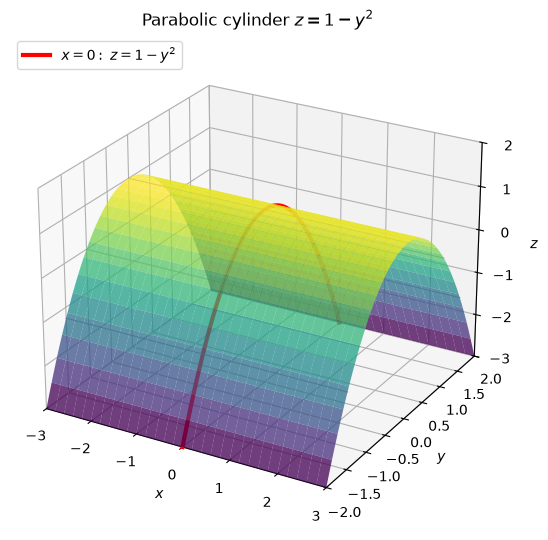
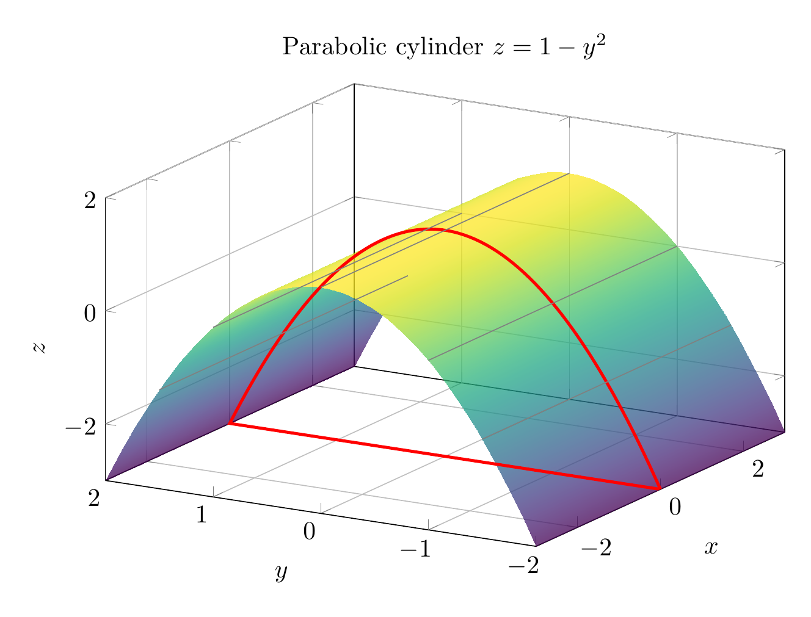

Path: mcma-Nex-N2-Pro/calculus-12.6.5/chat_20260824_172315_698629_utc_0800
Problem
Please solve the math problem in the image.

End of problem
Answer
The surface is
$$
z=1-y^2.
$$
Notice that the equation does **not** contain $x$. Therefore, for every fixed $x$, the same parabola appears in the $yz$-plane. This makes the surface a **parabolic cylinder**.
Key traces:
- In the plane $x=0$, the trace is the parabola
$$
z=1-y^2,
$$
which opens downward, has vertex $(0,0,1)$, and crosses the $y$-axis at $y=\pm1$ when $z=0$.
- For any fixed $x=c$, the trace is the same parabola
$$
z=1-y^2.
$$
- For any fixed $y=c$, the trace is a horizontal line parallel to the $x$-axis:
$$
z=1-c^2.
$$
So the surface is generated by translating the parabola $z=1-y^2$ along the $x$-axis.
$$
\boxed{\text{The surface } z=1-y^2 \text{ is a parabolic cylinder extending along the } x\text{-axis.}}
$$
---


\documentclass[border=10pt]{standalone}
\usepackage{pgfplots}
\pgfplotsset{compat=1.18}
\begin{document}
\begin{tikzpicture}
\begin{axis}[
width=11cm, height=8cm,
view={-60}{25},
xlabel={$x$}, ylabel={$y$}, zlabel={$z$},
title={Parabolic cylinder $z=1-y^2$},
grid=major,
zmin=-3, zmax=2,
xmin=-3, xmax=3,
ymin=-2, ymax=2,
]
\addplot3[
surf,
shader=interp,
colormap/viridis,
opacity=0.75,
domain=-3:3,
y domain=-2:2,
samples=30,
samples y=30
] {1-y^2};
\addplot3[
red, very thick,
domain=-2:2,
samples=80
] (0,x,{1-x^2});
\addplot3[gray, no marks] coordinates {(-3,-1.5,-1.25) (3,-1.5,-1.25)};
\addplot3[gray, no marks] coordinates {(-3,-1,0) (3,-1,0)};
\addplot3[gray, no marks] coordinates {(-3,0,1) (3,0,1)};
\addplot3[gray, no marks] coordinates {(-3,1,0) (3,1,0)};
\addplot3[gray, no marks] coordinates {(-3,1.5,-1.25) (3,1.5,-1.25)};
\end{axis}
\end{tikzpicture}
\end{document}

End of answer